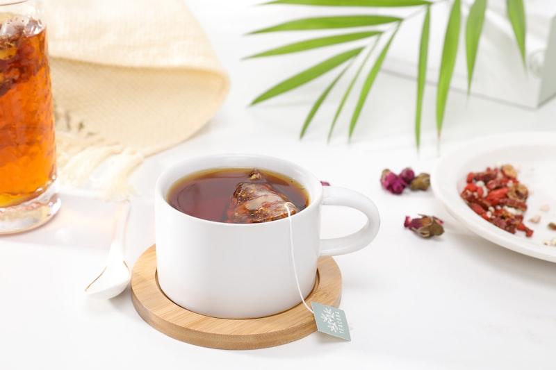
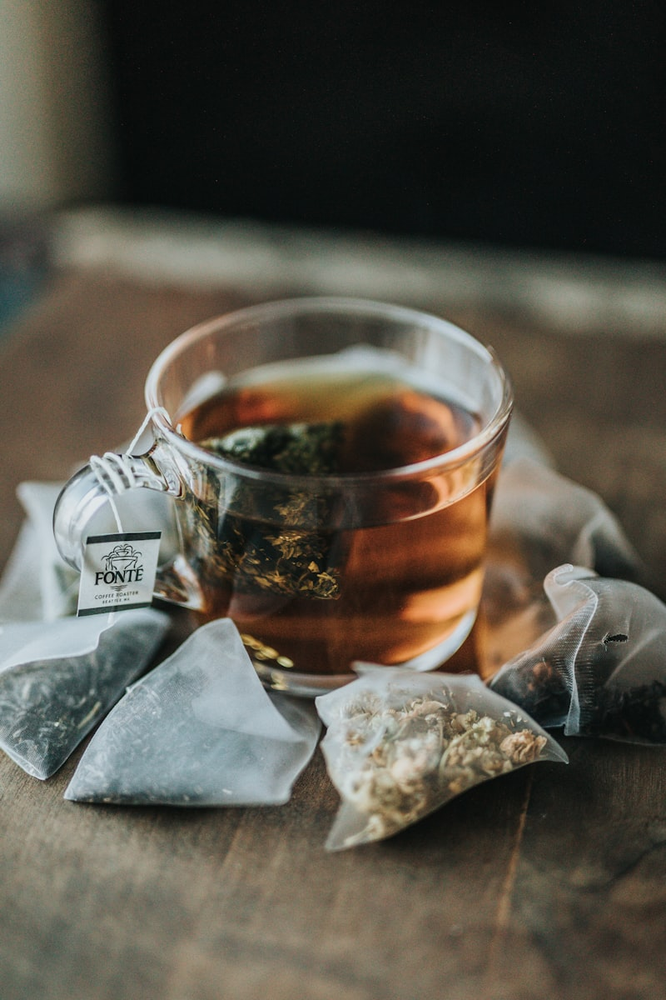
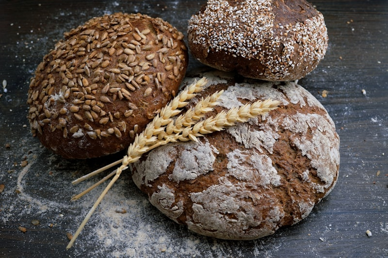
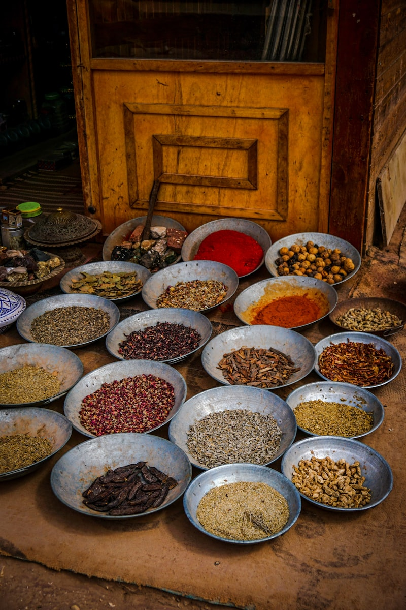

Tu Farmacia Líquida Natural
Dentro de tu cocina hay un arsenal de ingredientes que, combinados con agua y constancia, pueden transformar tu bienestar hormonal.
Estas bebidas no son modas ni milagros — son preparaciones basadas en plantas, raíces, semillas y especias que apoyan tu metabolismo, calman tu sistema nervioso y ayudan a mantener tu insulina en equilibrio.
☕ **Infusiones calientes** para las mañanas y las noches
🧊 **Bebidas frías** para refrescarte sin picos de azúcar
💧 **Aguas funcionales** para hidratarte con beneficios extra
🌿 **Ingredientes estrella** que potencian cada preparación
⚠️ **Importante:** Estas bebidas complementan tu alimentación saludable. Nunca les agregues azúcar, miel ni edulcorantes. Tómalas al natural para obtener todos sus beneficios.

Infusiones Calientes
Tés e infusiones que apoyan tu metabolismo y calman tu sistema nervioso — perfectos para comenzar o cerrar el día.

- Cáscara de ½ piña bien lavada
- 1 ramita de canela
- 3 clavos de olor
- 1 litro de agua
- Hierve el litro de agua en una olla.
- Agrega la cáscara de piña, la canela y los clavos.
- Cocina a fuego bajo por 10 minutos.
- Cuela y deja reposar 5 minutos antes de servir.

- 4 hojas de guayaba frescas (o secas)
- 1 palito de canela (5 cm)
- 1 rodaja de jengibre fresco (2 cm)
- 1 litro de agua
- Lava bien las hojas de guayaba.
- Hierve el agua y agrega las hojas, la canela y el jengibre.
- Cocina a fuego bajo por 10 minutos.
- Cuela y sirve caliente o tibia.

- 1 cucharada de flores de manzanilla (o 1 sobre)
- ¼ cucharadita de cúrcuma en polvo
- 1 pizca de pimienta negra
- 500 ml de agua
- Hierve el agua y agrega la manzanilla y la cúrcuma.
- Añade la pizca de pimienta negra (activa la absorción de la cúrcuma).
- Cocina a fuego bajo por 10 minutos.
- Cuela y sirve.

- 3 hojas de laurel secas
- 1 ramita de canela
- Jugo de ½ limón
- 500 ml de agua
- Hierve el agua con las hojas de laurel y la canela por 10 minutos.
- Apaga el fuego y cuela.
- Añade el jugo de limón justo antes de tomar (no lo hiervas).
- 2 ramitas de canela de Ceylán
- 4 clavos de olor
- 1 rodaja fina de jengibre
- 500 ml de agua
- Coloca todos los ingredientes en una olla con el agua.
- Hierve a fuego medio por 5 minutos.
- Baja el fuego y deja infusionar 10 minutos más.
- Cuela y toma tibio antes de dormir.

Bebidas Frías y Batidos
Opciones refrescantes para los días calurosos — hidratación con beneficios hormonales sin azúcar añadida.
- ½ pepino pelado y cortado
- Jugo de 2 limones
- 1 rodaja de jengibre (1 cm)
- 1 litro de agua fría
- Hielo al gusto
- Hojas de menta fresca (opcional)
- Licúa el pepino con el jengibre y medio vaso de agua.
- Cuela y mezcla con el resto del agua y el jugo de limón.
- Agrega hielo y hojas de menta.
- Revuelve bien y sirve inmediatamente.

- 2 cucharadas de flores de jamaica secas
- 1 ramita de canela
- 1 litro de agua
- Hielo al gusto
- Hierve el agua con la jamaica y la canela por 5 minutos.
- Apaga, tapa y deja reposar hasta que enfríe.
- Cuela, refrigera y sirve con hielo.

- 1 taza de espinacas frescas
- ½ pepino
- 1 tallo de apio
- Jugo de 1 limón
- 1 rodaja de jengibre
- 1 vaso de agua fría
- Lava bien todos los vegetales.
- Licúa todo junto hasta obtener una mezcla homogénea.
- Cuela si prefieres una textura más suave.
- Toma inmediatamente para aprovechar los nutrientes.
- 1 cucharada de semillas de chía
- Jugo de 1 limón
- 500 ml de agua fría
- Hielo al gusto
- Remoja las semillas de chía en el agua por 15-20 minutos.
- Revuelve cada 5 minutos para evitar grumos.
- Cuando las semillas estén gelificadas, agrega el limón.
- Añade hielo y disfruta.
Aguas Funcionales e Infusiones Frías
Aguas con ingredientes activos que puedes preparar la noche anterior y tomar durante todo el día.
- 1 cucharada de semillas de linaza
- 1 ramita de canela (o ½ cucharadita en polvo)
- 1 taza de agua (250 ml)
- Jugo de ½ limón (opcional)
- Coloca el agua, las semillas de linaza y la canela en una olla.
- Hierve a fuego medio por 10 minutos, revolviendo de vez en cuando.
- Cuela y deja enfriar.
- Añade el limón antes de tomar si deseas.
- ½ pepino en rodajas
- 1 limón en rodajas
- 8-10 hojas de menta fresca
- 1 litro de agua
- Hielo al gusto
- Coloca el pepino, limón y menta en una jarra.
- Agrega el agua fría.
- Refrigera por mínimo 2 horas (ideal toda la noche).
- Toma durante el día. Rellena con agua hasta 2 veces.

- 2 ramitas de canela de Ceylán
- 1 litro de agua a temperatura ambiente
- Rodajas de manzana verde (opcional)
- Coloca las ramitas de canela en una jarra con el agua.
- Si deseas, agrega rodajas de manzana verde.
- Deja reposar toda la noche a temperatura ambiente.
- En la mañana, refrigera y toma durante el día.

Guía de Ingredientes Estrella
Conoce los superpoderes de cada ingrediente que usas en tus bebidas y cómo potencian tu equilibrio hormonal.

- 🟤 CANELA DE CEYLÁN — Mejora la sensibilidad a la insulina. Usa la de Ceylán (clara y suave), no la Cassia (oscura y fuerte)
- 🟡 CÚRCUMA — Antiinflamatoria potente. Siempre combínala con pimienta negra para activar su absorción
- 🟤 CLAVO DE OLOR — Antioxidante más potente que existe por gramo. Apoya la función pancreática
- JENGIBRE — Termogénico natural. Activa el metabolismo y mejora la digestión
- 💡 Compra enteras, no en polvo — conservan mejor sus propiedades.
- 💡 Guárdalas en frascos de vidrio, lejos de la luz y la humedad.
- 💡 La canela de Ceylán se reconoce porque es más clara, quebradiza y tiene capas finas.
- 💡 El jengibre fresco es más potente que el seco — rállalo o córtalo en rodajas finas.
- ⚫ CHÍA — Absorbe 12x su peso en agua. Rica en omega-3, fibra y proteína. Forma gel que retrasa la absorción de azúcar
- 🟤 LINAZA — Fuente de omega-3 vegetal y lignanos. El mucílago protege la mucosa intestinal y estabiliza la insulina
- 📏 Porción diaria recomendada: 1-2 cucharadas de cada una
- ⏱️ Tiempo de remojo: chía 15-20 min, linaza puede hervirse 10 min
- 💡 La chía no necesita molerse — se activa con agua.
- 💡 La linaza SÍ debe molerse o hervirse para liberar sus nutrientes.
- 💡 Guarda la linaza molida en refrigeración máximo 1 semana.
- 💡 Ambas pueden añadirse a jugos, batidos o aguas — son versátiles.

- 🍃 HOJAS DE GUAYABA — Ricas en quercetina, un flavonoide que apoya la función del páncreas y mejora la sensibilidad insulínica
- 🍃 LAUREL — Contiene polifenoles que ayudan a regular la respuesta de la insulina después de comer
- 🌿 MENTA — Calma el sistema digestivo, reduce la hinchazón y ayuda a controlar el apetito emocional
- 🌺 JAMAICA (HIBISCO) — Rica en antocianinas antioxidantes que protegen las células pancreáticas
- 💡 Las hojas de guayaba se consiguen en mercados naturistas o directamente del árbol.
- 💡 El laurel seco es igual de efectivo que el fresco.
- 💡 La menta fresca tiene más aroma y sabor — cultívala en una maceta en tu cocina.
- 💡 Compra la jamaica en flores secas sueltas, no en sobrecitos — es más pura y económica.